Verdict cells: put Y / N. Feed the completed CSV to backend/qa_score.py.
| # | system | panel | claimed instrument | claimed λ | source fig / ref | target_ok | instrument_ok | wavelength_ok | reference_ok | crop_clean | notes |
|---|---|---|---|---|---|---|---|---|---|---|---|
| 1 | HR 4796A hr-4796a_keck1998 | 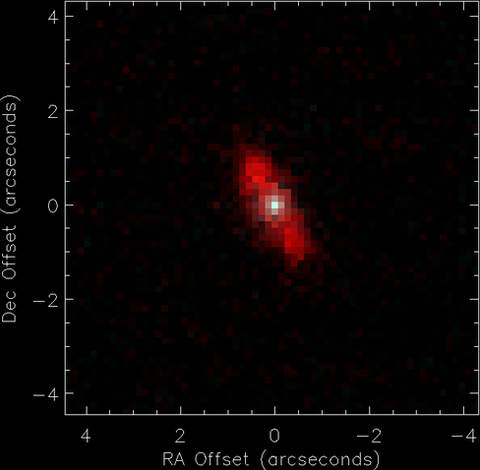 | Keck / MIRLIN | 20.8 um thermal imaging; disk resolved (companion paper: Jayawardhana+1998) | Koerner et al. 1998, Fig. 1 (crop: 20.8 um image) astro-ph/9806268 | ||||||
| 2 | HIP 21152 hip-21152_scexao2022 | 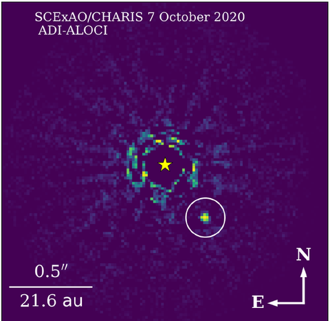 | Subaru-SCExAO / CHARIS | JHK broadband; accelerating-star discovery | Kuzuhara et al. 2022, Fig. 1 (crop) 2205.02729 | ||||||
| 3 | HD 142666 hd-142666_gemini-lights | 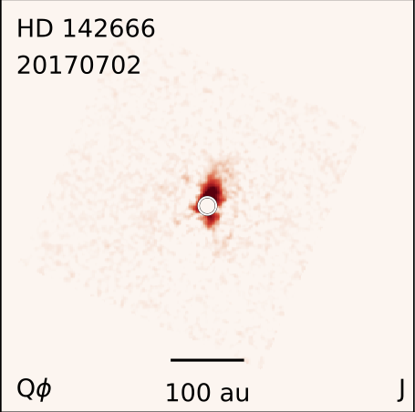 | Gemini-GPI / IFS pol | J band 1.24 um (pol. intensity) | Rich et al. 2022, continuous gallery (crop) 2206.05815 | ||||||
| 4 | DS Tau ds-tau_taurus-long2018 | 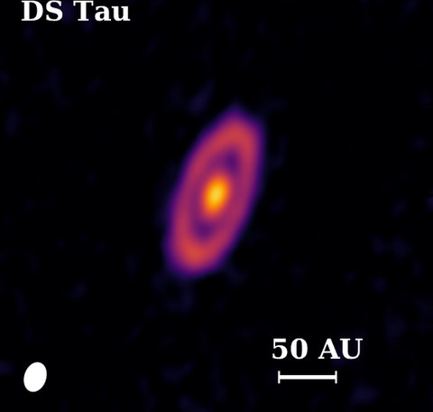 | ALMA / Band 6 | 1.33 mm continuum | Long et al. 2018, Fig. 1 (crop) 1810.06044 | ||||||
| 5 | HD 95086 hd-95086_herschel-pacs2015 | 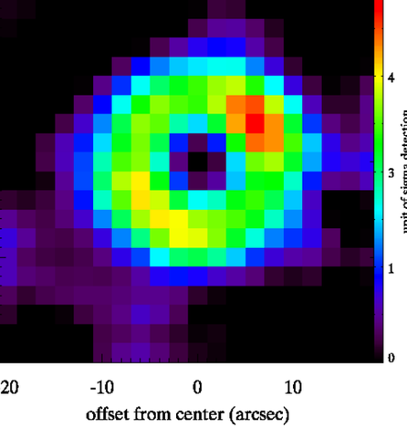 | Herschel / PACS | 70 um far-IR (PACS); HD 95086 belt | Su et al. 2015 (crop) 1412.0167 | ||||||
| 6 | HD 141569 hd-141569_sphere-rdi-xie22 | 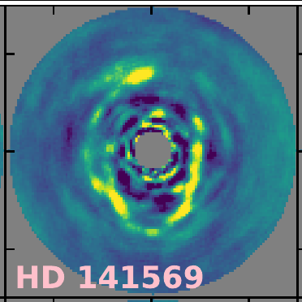 | VLT-SPHERE / IRDIS | total intensity (H23, RDI) | Xie et al. 2022, Fig. 9 (crop) 2208.07915 | ||||||
| 7 | BN CrA bn-cra_destinys-cra | 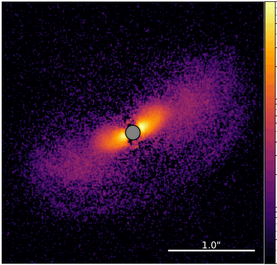 | VLT-SPHERE / IRDIS | H band polarimetric (Qphi) scattered light | Columba et al. 2026, Fig. 2 (crop) 2511.01717 | ||||||
| 8 | HD 141943 nz-lup_gpies-debris | 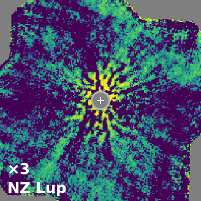 | Gemini-GPI / IFS | H band 1.6 um (total intensity) | Esposito et al. 2020, Fig. 6 (crop) 2004.13722 | ||||||
| 9 | DN Tau dn-tau_sphere-taurus | 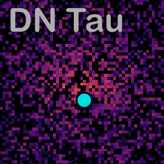 | VLT-SPHERE / IRDIS DPI | H band 1.6 um (pol. intensity) | Garufi et al. 2024, Fig. 2 (crop) 2403.02158 | ||||||
| 10 | HD 131835 hd-131835_reasons | 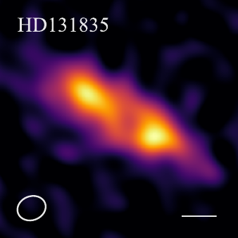 | ALMA/SMA / Band 6/7 | ~0.9-1.3 mm continuum | Matrà et al. 2025, Fig. 1 (crop) 2501.09058 | ||||||
| 11 | Z CMa z-cma_zurlo2024 | 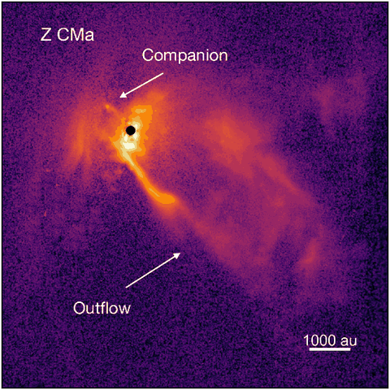 | VLT-SPHERE / IRDIS | H band 1.65 um (polarized intensity, PI) | Zurlo et al. 2024, Fig. 1 (crop) 2403.12124 | ||||||
| 12 | SU Aur su-aur_sphere2021 | 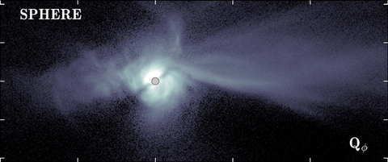 | VLT-SPHERE / IRDIS | H band 1.6 um (pol. intensity) | Ginski et al. 2021, Fig. 1 (crop, SPHERE Qphi) 2102.08781 | ||||||
| 13 | HD 95086 hd-95086_naco2013 | 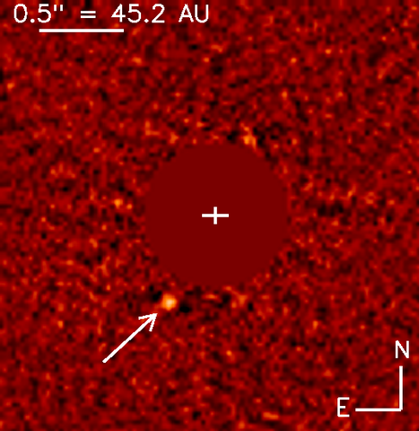 | VLT-NACO / NACO | L' band; planet discovery | Rameau et al. 2013, Fig. 1 (crop) 1305.7428 | ||||||
| 14 | COCONUTS-2 coconuts-2_discovery2021 | 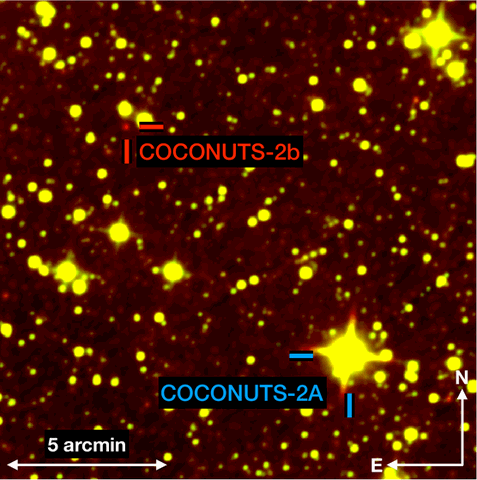 | WISE / AllWISE W1+W2 | AllWISE bi-color image: COCONUTS-2 b 594" (6471 au) from the M dwarf | Zhang et al. 2021, Fig. 1 (crop) 2107.02805 | ||||||
| 15 | ROXs 42B roxs-42b_keck2014 | 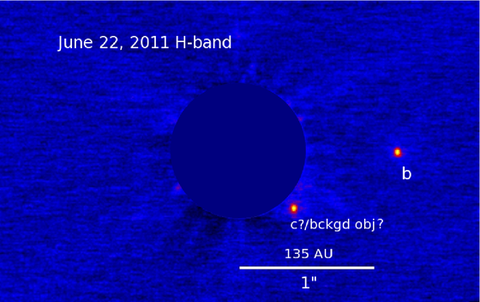 | Keck / NIRC2 | H band; companion confirmation image | Currie et al. 2014, Fig. 1 (crop) 1310.4825 | ||||||
| 16 | V4046 Sgr v4046-sgr_sma2010 | 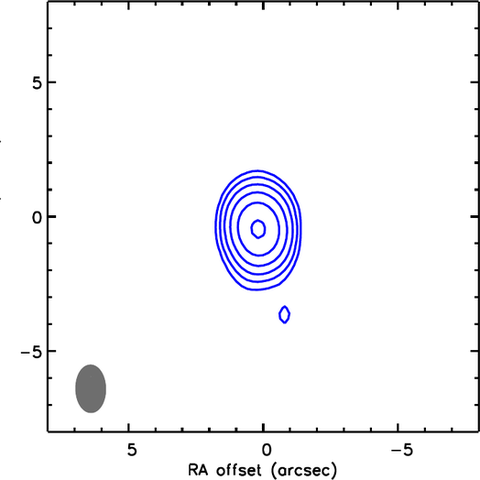 | SMA / Submillimeter Array | 1.3 mm continuum | Rodriguez et al. 2010, Fig. 4 (crop) 1007.3993 | ||||||
| 17 | HD 141943 nz-lup_nicmos2014 | 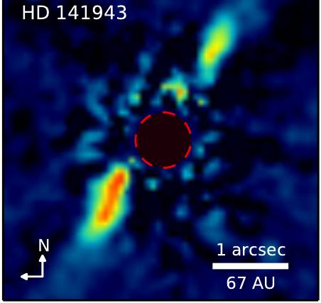 | HST / NICMOS | F110W (1.1 um) coronagraphic scattered light | Soummer et al. 2014, Fig. 2 (crop) 1404.5614 | ||||||
| 18 | HD 145560 hd-145560_sphere-debris-2025 | 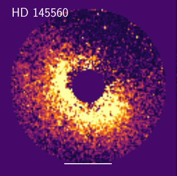 | VLT-SPHERE / ZIMPOL | ZIMPOL VBB 0.74 um (pol. intensity) | Engler et al. 2025, Fig. 5b (crop) 2512.03128 | ||||||
| 19 | DS Tau ds-tau_sphere-taurus | 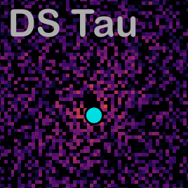 | VLT-SPHERE / IRDIS DPI | H band 1.6 um (pol. intensity) | Garufi et al. 2024, Fig. 2 (crop) 2403.02158 | ||||||
| 20 | HT Lup ht-lup_dsharp | 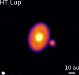 | ALMA / Band 6 | 1.25 mm continuum | Andrews et al. 2018, Fig. 3 (crop) 1812.04040 | ||||||
| 21 | HD 71722 hd-71722_herschel-pacs | 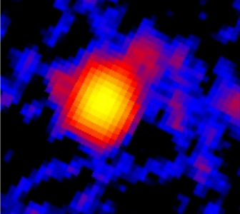 | Herschel / PACS | 100 um (original data) | Morales et al. 2013, Fig. 1 (crop: HD 71722) 2013ApJ...776..111M | ||||||
| 22 | HD 129590 hd-129590_gpi-crotts24 | 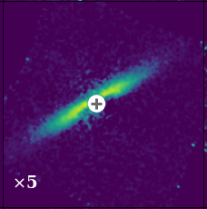 | Gemini-GPI / IFS pol | H band 1.6 um (pol. intensity, Qphi) | Crotts et al. 2024, Fig. 2 (crop) 2311.14599 | ||||||
| 23 | HR 4796A hr-4796a_stis2018 | 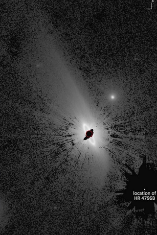 | HST / STIS | 0.2-1.0 um broadband (optical) | Schneider et al. 2018, Fig. 8 (crop) 1712.08599 | ||||||
| 24 | RX J1852.3-3700 rx-j1852-3-3700_alice-f110w | 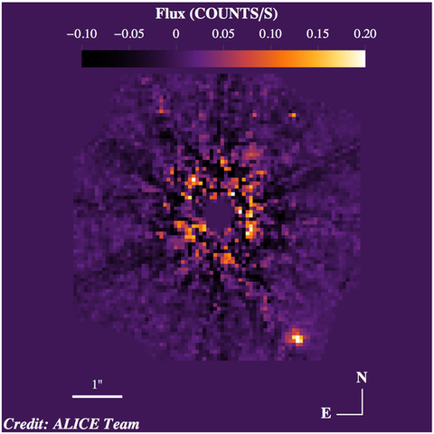 | HST / NICMOS | F110W 1.1 um (ALICE archival reprocessing, combined coadd) | ALICE HLSP v1 combined coadd (HST program 10849, STScI) — hi-res: ALICE archive (STScI) 1802.07754 | ||||||
| 25 | DoAr 44 doar-44_dartts-s | 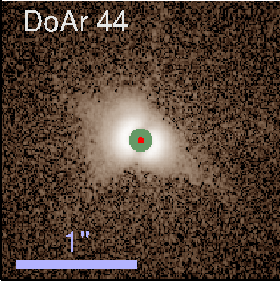 | VLT-SPHERE / IRDIS DPI | H band 1.6 um (pol. intensity) | Avenhaus et al. 2018, Fig. 1 (crop) 1803.10882 | ||||||
| 26 | IRAS 15469-5311 iras-15469-5311_vlti_pionier | 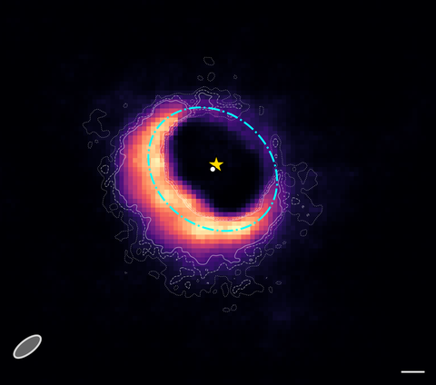 | VLTI / PIONIER | H band (SPARCO/ORGANIC image reconstruction) | De Prins et al. 2026, Fig. 4 (crop: IRAS 15469-5311 panel) 2605.13445 | ||||||
| 27 | TW Hya tw-hya_naco-pippin | 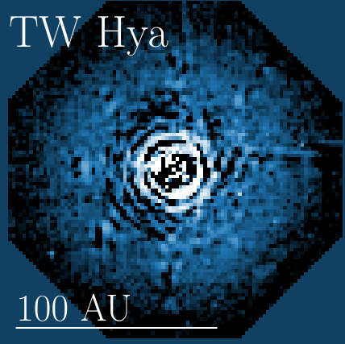 | VLT-NACO / NACO pol | Ks band (PIPPIN PDI reprocessing) | de Regt et al. 2024, Fig. 6 (crop) 2404.02222 | ||||||
| 28 | HR 4796A hr-4796a_visao-rodigas2015 | 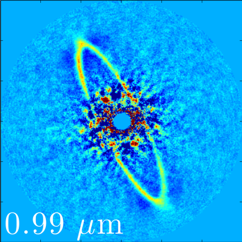 | Magellan-MagAO / VisAO | Ys 0.99 um (MagAO/VisAO ADI; debris ring) | Rodigas et al. 2015, Fig. 1e (crop) 1410.7753 | ||||||
| 29 | Elias 24 elias-24_eris2025 | 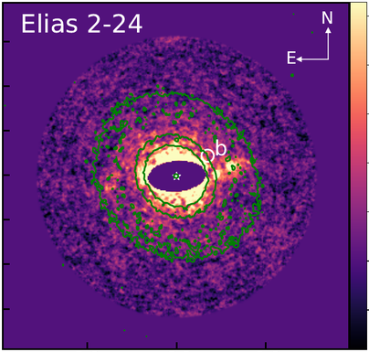 | VLT / ERIS/vAPP | 4 um (M-band, mid-IR scattered light, RDI) | Maio et al. 2025, Fig. 9 (crop) 2504.19810 | ||||||
| 30 | HIP 39017 hip-39017_charis2024 | 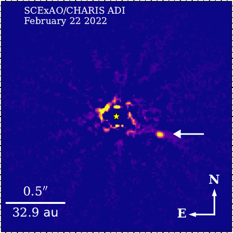 | Subaru-SCExAO / CHARIS IFS (ADI) | JHK broadband (1.1-2.4 um) | Tobin et al. 2024, Fig. 2 (crop) 2403.04000 | ||||||
| 31 | PDS 110 pds-110_destinys-orion | 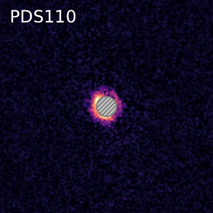 | VLT-SPHERE / IRDIS DPI | H band 1.6 um (Qphi pol. intensity) | Valegard et al. 2024, Fig. 2 (crop) 2403.02156 | ||||||
| 32 | WSB 52 wsb-52_dsharp | 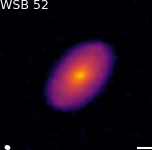 | ALMA / Band 6 | 1.25 mm continuum | Andrews et al. 2018, Fig. 3 (crop) 1812.04040 | ||||||
| 33 | FU Ori fu-ori_alma2020 | 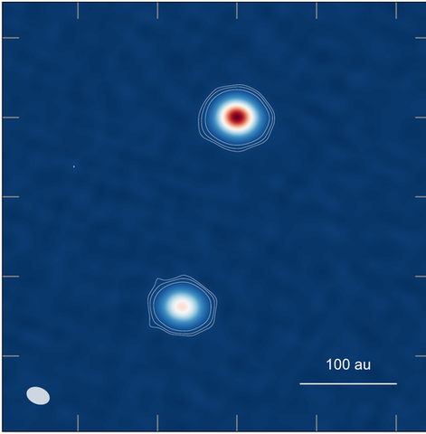 | ALMA / Band 6 | 1.3 mm (Band 6) | Perez et al. 2020, Fig. 1 (crop) 1911.11282 | ||||||
| 34 | HD 98363 hd-98363_discs | 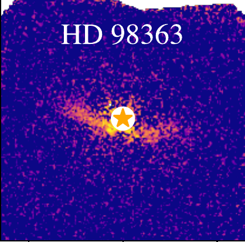 | Gemini-GPI / IFS pol | H band 1.6 um (Qr pol. intensity) | Hom et al. 2025, Fig. 1 (crop) 2505.02976 | ||||||
| 35 | HD 206893 hd-206893_alma2020 | 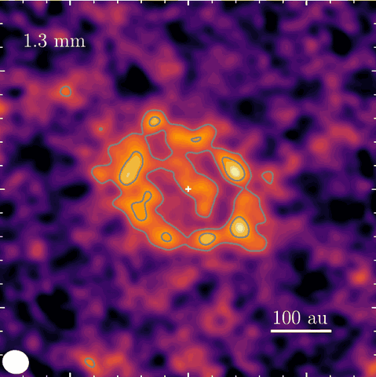 | ALMA / Band 6 | 1.3 mm continuum | Marino et al. 2020, Fig. 1 (crop) 2010.12582 | ||||||
| 36 | HD 10638 hd-10638_reasons | 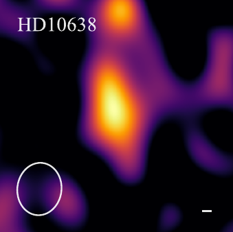 | ALMA/SMA / Band 6/7 | ~0.9-1.3 mm continuum | Matrà et al. 2025, Fig. 1 (crop) 2501.09058 | ||||||
| 37 | RY Tau ry-tau_alice-f110w | 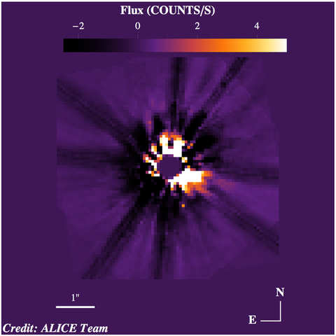 | HST / NICMOS | F110W 1.1 um (ALICE archival reprocessing, combined coadd) | ALICE HLSP v1 combined coadd (HST program 10177, STScI) — hi-res: ALICE archive (STScI) 1802.07754 | ||||||
| 38 | HD 294260 hd-294260_destinys-orion | 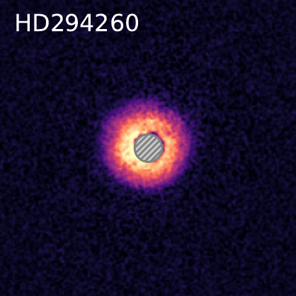 | VLT-SPHERE / IRDIS DPI | H band 1.6 um (Qphi pol. intensity) | Valegard et al. 2024, Fig. 2 (crop) 2403.02156 | ||||||
| 39 | 2MASS J16163345-2521505 2mass-j16163345-2521505_agepro | 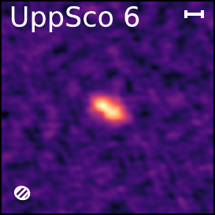 | ALMA / Band 6 | 1.3 mm continuum | Zhang et al. 2025, Fig. 3 (crop) 2506.10719 | ||||||
| 40 | LkHa 263C lkha-263c_jedice | 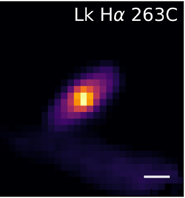 | JWST / NIRSpec IFU (G395H) | near-IR continuum (median, G395H cube) | Bergner et al. 2026, Fig. 1 (crop) 2603.18163 | ||||||
| 41 | AB Aur ab-aur_sphere2020 | 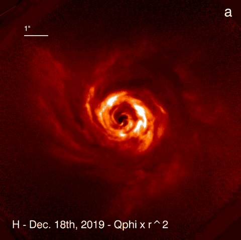 | VLT-SPHERE / IRDIS | H band 1.6 um (pol. intensity) | Boccaletti et al. 2020, Fig. 1a (crop) 2005.09064 | ||||||
| 42 | HH 30 hh-30_nicmos2001 | 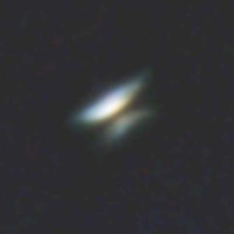 | HST / NICMOS (NIC2) | near-IR (F110W/F160W/F204M three-color composite) | Cotera et al. 2001, Fig. 1 (crop) astro-ph/0104066 | ||||||
| 43 | SO 662 so-662_alma-huang2024 | 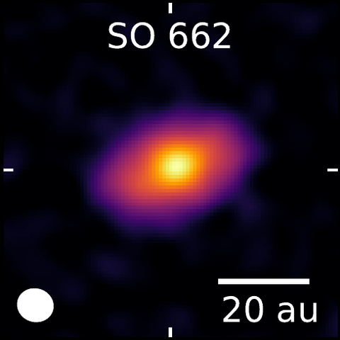 | ALMA / Band 6 | 1.3 mm continuum | Huang et al. 2024, Fig. 3 (crop: SO 662) 2410.03823 | ||||||
| 44 | HR 4796A hr-4796a_nici2014-j | 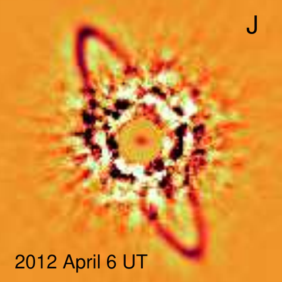 | Gemini-South / NICI | J band | Wahhaj et al. 2014, Fig. 1 (crop: J panel) 1404.6525 | ||||||
| 45 | TW Hya tw-hya_alma2016 | 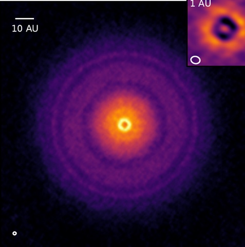 | ALMA / Band 7 | 870 um continuum | Andrews et al. 2016, Fig. 1 (crop) 1603.09352 | ||||||
| 46 | HD 169142 hd-169142_lucas2025-vampires-mbi | 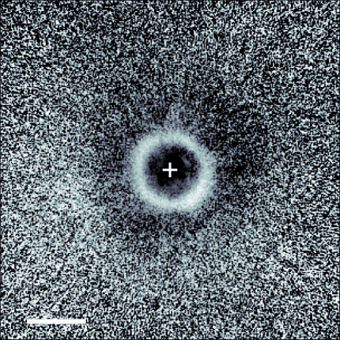 | Subaru-SCExAO / VAMPIRES | MBI 0.61-0.76 um (Qphi x r^2, 2024-07-29 epoch) | Lucas et al. 2025, Fig. 3 (crop) 2509.15323 | ||||||
| 47 | HD 146181 hd-146181_sphere-debris-2025 | 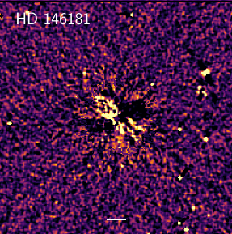 | VLT-SPHERE / IRDIS/IFS | H band 1.6 um (total intensity) | Engler et al. 2025, Fig. 2a (crop) 2512.03128 | ||||||
| 48 | DM Tau dm-tau_alice-f160w | 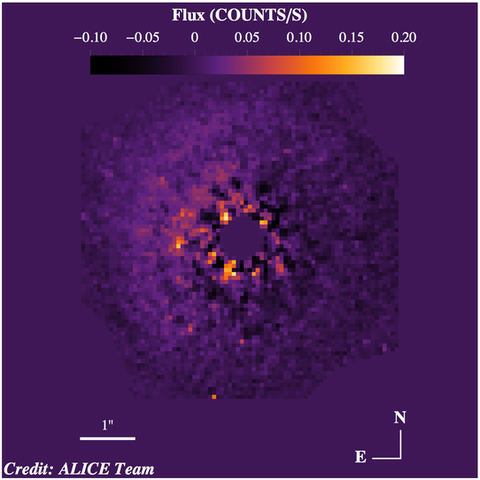 | HST / NICMOS | F160W 1.6 um (ALICE archival reprocessing, combined coadd) | ALICE HLSP v1 combined coadd (HST program 10177, STScI) — hi-res: ALICE archive (STScI) 1802.07754 | ||||||
| 49 | DoAr 28 doar-28_hiciao2014 | 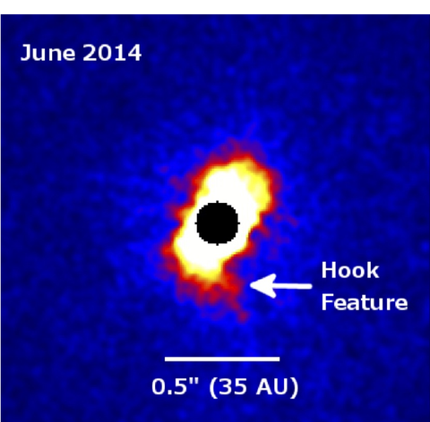 | Subaru-HiCIAO / HiCIAO | H band (pol. intensity) | Rich et al. 2015, Fig. 1 (crop) 1507.03014 | ||||||
| 50 | IQ Tau iq-tau_taurus-long2018 | 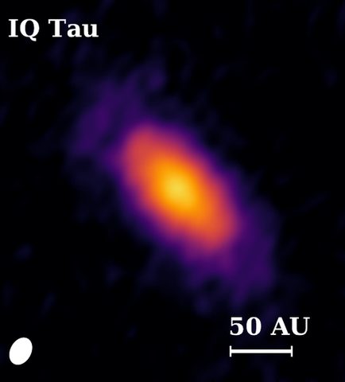 | ALMA / Band 6 | 1.33 mm continuum | Long et al. 2018, Fig. 1 (crop) 1810.06044 | ||||||
| 51 | FW Tau fw-tau_nirc2-2014 | Keck-NIRC2 / NIRC2 (NGS AO) | K' band (2.124 um) | Kraus et al. 2014, Fig. 1 (crop) 1311.7664 | |||||||
| 52 | PDS 66 pds-66_stis-schneider14 | HST / STIS | 0.2-1.0 um broadband (optical) | Schneider et al. 2014 (crop; per-target STIS PSFTSC figures) 1406.7303 | |||||||
| 53 | LkCa 15 lkca-15_sphere-taurus | VLT-SPHERE / IRDIS DPI | J band 1.25 um (pol. intensity) | Garufi et al. 2024, Fig. 2 (crop) 2403.02158 | |||||||
| 54 | AU Mic au-mic_alma2013 | ALMA / Band 6 | 1.3 mm continuum (edge-on belt) | MacGregor et al. 2013, Fig. 1 (crop) 1211.5148 | |||||||
| 55 | YSES-1 yses-1_jwst2025 | JWST / NIRSpec IFU | NIRSpec IFU prism 4.0 um slice showing b and c; silicate clouds in c, CPD around b | Hoch et al. 2025, Fig. 1 (crop: JWST/NIRSpec IFU 4.0 um datacube slice with b and c) 2507.18861 | |||||||
| 56 | HD 10647 hd-10647_hst2021 | HST / ACS/HRC coronagraph | F606W (optical, scattered light) | Lovell et al. 2021, Fig. 2 (crop) 2106.05975 | |||||||
| 57 | U Mon u-mon_sphere_irdis | VLT / SPHERE/IRDIS | H band (Q_phi polarized intensity) | Andrych et al. 2023, Fig. 4 (crop: U Mon panel) 2307.16598 | |||||||
| 58 | PDS 70 pds-70_magao-wagner2018 | Magellan-MagAO / VisAO | H-alpha 0.656 um (SDI+; accreting planet b) | Wagner et al. 2018, Fig. 1 left (crop) 1807.10766 | |||||||
| 59 | HR 8799 hr-8799_keck2008 | Keck / NIRC2 | JHK composite; b, c, d discovery | Marois et al. 2008, Fig. 1 (crop) 0811.2606 | |||||||
| 60 | HD 104860 hd-104860_nicmos-ren2023 | HST / NICMOS | F110W 1.12 um (NMF reprocessing) | Ren et al. 2023, Fig. 3 (crop) 2302.04273 | |||||||
| 61 | SU Aur su-aur_sphere-taurus | VLT-SPHERE / IRDIS DPI | H band 1.6 um (pol. intensity) | Garufi et al. 2024, Fig. 2 (crop) 2403.02158 | |||||||
| 62 | beta Pic beta-pic_planetd2026-nircam-f444w | JWST / NIRCam | F444W 4.44 um (2023-03-18; d arrowed, high-pass filtered) | Sutlieff & Bonse et al. 2026, Fig. 1 (crop) 2606.23801 | |||||||
| 63 | V892 Tau v892-tau_alma-long2021 | ALMA / Band 6 | 224 GHz (1.3 mm) continuum | Long et al. 2021, Fig. 1 (crop: 224 GHz panel) 2105.02918 | |||||||
| 64 | Oph 163131 oph-163131_keck2021 | Keck / NIRC2 | K' band (2.2 um) scattered light | Wolff et al. 2021, Fig. 3 (crop) 2103.02665 | |||||||
| 65 | HD 100453 hd-100453_alma2019 | ALMA / Band 6 | 1.3 mm (Band 6, 234 GHz) | van der Plas et al. 2019, Fig. 1 (crop) 1902.00720 | |||||||
| 66 | TWA 7 twa-7_sphere-debris-2025 | VLT-SPHERE / IRDIS DPI | H band 1.6 um (pol. intensity) | Engler et al. 2025, Fig. 5b (crop) 2512.03128 | |||||||
| 67 | WaOph 6 waoph-6_sphere2021 | VLT-SPHERE / IRDIS DPI | H band (1.6 um) | Brown-Sevilla et al. 2021, Fig. 2 (crop) 2107.13560 | |||||||
| 68 | NY Ori ny-ori_zurlo2024 | VLT-SPHERE / IRDIS | H band 1.65 um (Q_phi, polarized intensity) | Zurlo et al. 2024, Fig. 1 (crop) 2403.12124 | |||||||
| 69 | HD 100546 hd-100546_alice-f110w | HST / NICMOS | F110W 1.1 um (ALICE archival reprocessing, combined coadd) | ALICE HLSP v1 combined coadd (HST program 11155, STScI) — hi-res: ALICE archive (STScI) 1802.07754 | |||||||
| 70 | HD 181327 hd-181327_nicmos2006 | HST / NICMOS | 1.1 um; bright ring | Schneider et al. 2006, Fig. 2a (crop) astro-ph/0606213 | |||||||
| 71 | Haro 6-5B haro-6-5b_edgeon-alma2020-b4 | ALMA / Band 4 | 2.1 mm continuum (edge-on) | Villenave et al. 2020, Fig. 1 (crop) 2008.06518 | |||||||
| 72 | GM Aur gm-aur_nicmos2003 | HST / NICMOS | F110W coronagraphy of the flared disk | Schneider et al. 2003, Fig. 1 (crop, panels B-C) 2003AJ....125.1467S | |||||||
| 73 | 2M1207 2m1207_miri2025 | JWST / MIRI (Imaging, F1000W/F1500W) | 10 and 15 um imaging | Patapis et al. 2025, Fig. 2 (crop) 2507.08961 | |||||||
| 74 | GM Aur gm-aur_acssbc_f140lp | HST / ACS/SBC | F140LP (~1400 A, FUV scattered light) | Hornbeck et al. 2016, Fig. 4 (crop) 1607.03520 | |||||||
| 75 | HD 10647 hd-10647_arks | ALMA / Band 7/6 | ~0.88-1.3 mm continuum | Marino et al. 2026, Fig. 3 (crop) 2601.11708 | |||||||
| 76 | DH Tau dh-tau_taurus-long2019 | ALMA / Band 6 | 1.33 mm continuum | Long et al. 2019, Fig. 3 (crop) 1906.10809 | |||||||
| 77 | Brun 252 brun-252_destinys-orion | VLT-SPHERE / IRDIS | H band 1.6 um (total intensity) | Valegard et al. 2024, Fig. 1 thumbnail (crop); companion detected, no disk in polarized light 2403.02156 | |||||||
| 78 | HK Tau B hk-tau-b_edgeon-alma2020 | ALMA / Band 7 | 0.89 mm continuum (HK Tau B edge-on disk) | Villenave et al. 2020, Fig. 1 (crop) 2008.06518 | |||||||
| 79 | CW Tau cw-tau_alma2022 | ALMA / ALMA (Bands 4/6/7/8) | 0.89 mm (Band 7; also 0.75/1.3/2.2 mm) | Ueda et al. 2022, Fig. 1 (crop) 2203.16236 | |||||||
| 80 | HD 202917 hd-202917_nicmos-ren2023 | HST / NICMOS | F110W 1.12 um (NMF reprocessing) | Ren et al. 2023, Fig. 3 (crop) 2302.04273 | |||||||
| 81 | HD 38858 hd-38858_reasons | ALMA/SMA / Band 6/7 | ~0.9-1.3 mm continuum | Matrà et al. 2025, Fig. 1 (crop) 2501.09058 | |||||||
| 82 | LkHa 330 lkha-330_keck-vortex-2024 | Keck / NIRC2 vortex | L' 3.8 um scattered light (ALMA contours overlaid) | Wallack et al. 2024, Fig. 4 (crop) 2408.04048 | |||||||
| 83 | HD 32297 hd-32297_carma2008 | CARMA / CARMA | 1.3 mm continuum (CARMA) | Maness et al. 2008 (crop) 0808.3582 | |||||||
| 84 | HD 32297 hd-32297_lbti2014 | LBT / LBTI/LMIRCam | L' (3.8 um) | Rodigas et al. 2014, Fig. 1 (crop) 1401.3343 | |||||||
| 85 | LkCa 15 lkca-15_magao2022 | Magellan-MagAO / VisAO | Halpha differential imaging (2014 Nov 16 epoch) | Follette et al. 2023, Fig. 11 (crop) 2211.02109 | |||||||
| 86 | V960 Mon v960-mon_zurlo2024 | VLT-SPHERE / IRDIS | H band 1.65 um (polarized intensity, PI) | Zurlo et al. 2024, Fig. 1 (crop) 2403.12124 | |||||||
| 87 | HD 163296 hd-163296_alma-isella2016 | ALMA / Band 6 | 1.3 mm continuum (ring discovery, 0.22x0.14 arcsec beam) | Isella et al. 2016, Fig. 1 (crop: continuum panel) 2016PhRvL.117y1101I | |||||||
| 88 | TYC 9340-437-1 tyc-9340-437-1_arks | ALMA / Band 7/6 | ~0.88-1.3 mm continuum | Marino et al. 2026, Fig. 3 (crop) 2601.11708 | |||||||
| 89 | HD 35841 hd-35841_gpies-debris | Gemini-GPI / IFS pol | H band 1.6 um (pol. intensity) | Esposito et al. 2020, Fig. 5 (crop) 2004.13722 | |||||||
| 90 | 49 Cet 49-cet_sphere-debris-2025 | VLT-SPHERE / IRDIS DPI | H band 1.6 um (pol. intensity) | Engler et al. 2025, Fig. 5a (crop) 2512.03128 | |||||||
| 91 | alpha Cen A alpha-cen-a_near2021 | VLT / NEAR/VISIR | N-band (~10-12.5 um) mid-IR coronagraphy; habitable-zone candidate 'C1' | Wagner et al. 2021, Fig. 3a (NEAR campaign image, candidate C1; crop) 2102.05159 | |||||||
| 92 | IRAS 04302+2247 iras-04302-2247_edgeon-alma2020-b4 | ALMA / Band 4 | 2.1 mm continuum (edge-on) | Villenave et al. 2020, Fig. 1 (crop) 2008.06518 | |||||||
| 93 | CQ Tau cq-tau_pdbi-2.7mm2011 | SMA/PdBI/VLA / SMA 850um + IRAM-PdBI mm + VLA cm | 2.7 mm continuum | Banzatti et al. 2011, Fig. 1 (crop: 2.7mm) 1009.2697 | |||||||
| 94 | HD 191089 hd-191089_nicmos-ren2019 | HST / NICMOS | F110W 1.12 um (NICMOS NMF) | Ren et al. 2019, Fig. 1b (crop) 1908.00006 | |||||||
| 95 | Tau 042021 tau-042021_edgeon-alma2020 | ALMA / Band 7 | 0.89 mm continuum (edge-on) | Villenave et al. 2020, Fig. 1 (crop) 2008.06518 | |||||||
| 96 | AB Aur ab-aur_dykes2024-k | Subaru-SCExAO / CHARIS | K band 1.93-2.36 um (Qphi, 2020-10-04 epoch) | Dykes et al. 2024, Fig. 2 top (crop) 2410.11939 | |||||||
| 97 | HD 30447 hd-30447_gpies-debris | Gemini-GPI / IFS pol | H band 1.6 um (pol. intensity) | Esposito et al. 2020, Fig. 5 (crop) 2004.13722 | |||||||
| 98 | GM Aur gm-aur_alma-maps2021 | ALMA / Band 6 (CO line) | 13CO 2-1 zeroth moment | Oberg et al. 2021, Fig. 6 (crop) 2109.06268 | |||||||
| 99 | beta Pic beta-pic_reasons | ALMA/SMA / Band 6/7 | ~0.9-1.3 mm continuum | Matrà et al. 2025, Fig. 1 (crop) 2501.09058 | |||||||
| 100 | HD 100453 hd-100453_gravity2022-shadow | VLTI-GRAVITY + VLT-SPHERE / GRAVITY K + scattered light | inner-disk misalignment: predicted vs observed shadows | Bohn et al. 2022, Fig. 7 (crop: middle+right panels - SPHERE scattered-light image with shadow positions predicted from the VLTI/GRAVITY inner-disk geometry, misalignment solutions Dtheta_1 in blue and Dtheta_2 in orange) 2112.00123 |